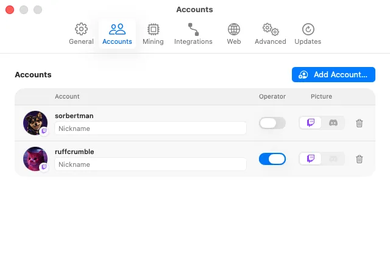
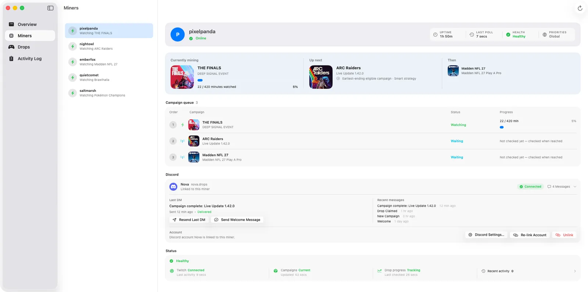

Multi-account mining is useful when you manage several Twitch profiles or help a group keep Drops progress moving. SwiftMiner keeps each account isolated so one miner can reconnect, pause, or finish a campaign without stopping the others.
Add multiple Twitch accounts
Add each Twitch account from Settings > Accounts. Every account uses Twitch's activation flow and stores its own authorization token in macOS Keychain. Repeat the setup flow for each account you want SwiftMiner to manage.

Track each miner independently
The Miners view shows current stream, status, campaign, and health details for each account. The Drops view groups campaign state so you can tell which accounts are mining, claimed, blocked, or waiting for setup.

Avoid duplicate viewing conflicts
Twitch generally counts one active watch session per account. If the same Twitch account is watching elsewhere in a browser, mobile app, or TV app, SwiftMiner's progress can pause. Use separate Twitch accounts for separate miners and avoid watching manually with accounts that are actively mining.
Prioritize games per account
Use SwiftMiner's priority controls when one account should focus on a specific game. Priorities help the app choose campaigns intentionally, especially when several accounts are eligible for different Drops at the same time.